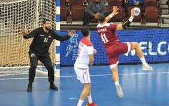
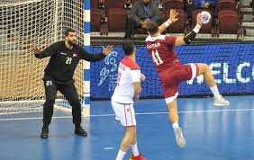

هي رياضة جماعية تُلعب بين فريقين يتكون كل منهما من أحد عشر لاعبًا تلعب بكرة مُكوَّرة ... تُلعب كرة القدم في ملعب مستطيل الشكل مع مرميين في جانبيه. الهدف من اللعبة هو إحراز الأهداف بركل الكرةداخل المرمى. حارس المرمى هو اللاعب الوحيد الذي يُسمح له أن يلمس الكرة بيديه أو ذراعيه، بشرط أن يكون داخل منطقة الجزاء.
هي رياضة جماعية وشعبية حيث يتنافس فيها فريقان يتألف كل منهما من خمسة لاعبين يحاول كلاهما إدخال الكرة في سلة الخصم وإحراز الأهداف وكسب النقاط. ... ويمكن للاعب التقدم بالكرة إلى الأمام عن طريق تنطيطها على أرض الملعب فيما يُعرف باسم (المراوغة) أو تمريرها لزملائه للوصول إلى الهدف.
هي رياضة جماعية يتبارى فيها فريقان لكل منهما 7 لاعبين (6 لاعبين وحارس مرمى). ... وتتألف مباريات كرة اليد من شوطين مدة كل منهما 30 دقيقةً، والفريق الذي يتمكن من تسجيل أكبر عدد من الأهداف في مرمى الخصم في نهاية شوطي المباراة هو الفريق الفائز.
 
